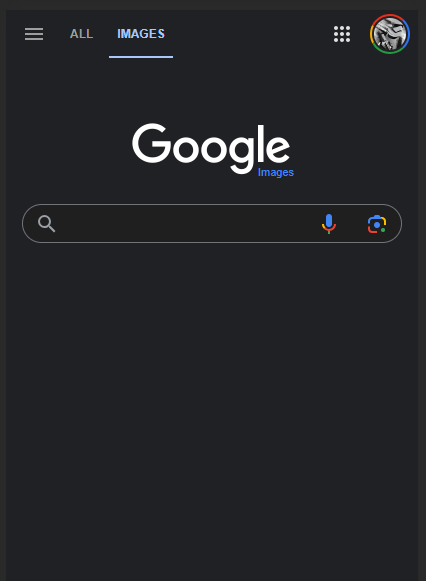
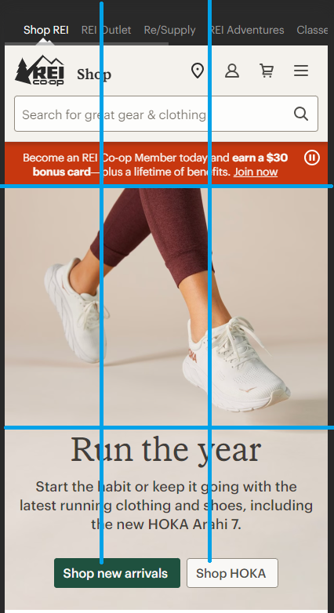
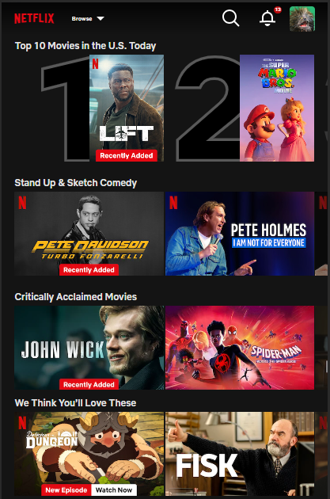

Hick's Law
Google Image Search
images.google.com Hick's Law states that the more options that one has available to them, the longer it takes them to process and act. Google's search pages (particularly the image search) are great examples of this. The page has a focused purpose, to get user input of what to search for. The interface does not include instructions, options, extra fields, etc. Other content/information is pushed to the very top and very bottom of the page, giving priority to the few elements on the main area of the page.
Rule of Thirds
REI
REI.com The Rule of Thirds identifies a tic-tac-toe grid line that when overlayed over a viewable pane (picture, layout, etc.) divides it into sightlines. A rough grid was overlayed on REI's mobile homepage, illustrating the guiding lines of the layout, corresponding to the rule of thirds grid. This creates intuitive 'view areas' that a user can process more easily.
PARC: Contrast
Netflix
netflix.com Contrast in a design is a powerful way to emphasize a particular element and call attention to it. Netflix uses this principle in many ways throughout their brand. Their logo is bright red on a black background, 'Recently Added' overlays on new content call the user's attention to those options, and thumbnails for content are selected to emphasize the image and/or title. These are contrasted agains a plain black background, and white clear headers, making the content stand out over the page itself.